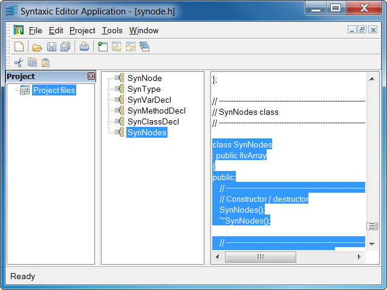

syneditExample of a simple syntax text editor.

This program shows you how multiple views on the same document
can interact with each other through this document.
The sample lets you
open C++ header files. They are loaded by text documents
that perform a basic parsing on them to extract class
declarations. In the same window, two
views let you display the same header file. In a tree view,
the C++ classes that were declared in the header file
are listed. In a text view, the header file is simply
displayed. When a class is activated in the tree view,
its declaration is selected in the text view.
Similarly, when the selection changes in the text view, the
class pointed to by the cursor is selected in the tree
view.
How does it work? When an item is activated in the tree
view, the tree view
notifies the document by calling its method
notifyDocument with the message "SelectClass"
and giving it the selected class node as the parameter.
When receiving the message, the document notifies the other
views invoking its method notifyViews
with the same message "SelectClass" and the node corresponding
to the class to select.
Furthermore, this sample allows you to manage project files. By default, these project files contain folders and file items that refer to header files. Projects appear in a tree view contained by a dockable bar docked to the left (by default). When activating an item of the tree that refers to a header file, a corresponding document is opened (or activated if it was already opened). Management of project files is specified in the Application Framework Editor by adding a Project document type in addition to the header document type (called Tree). The files that manage the Project document (ProjectDocument.cpp, ProjectDocument.h, ProjectView.cpp, and ProjectView.h) are generated by the Wizard and do not need to be modified afterwards.
IlvDvTextDocumentIlvDvTextViewIlvDvProjectDocumentIlvDvProjectView